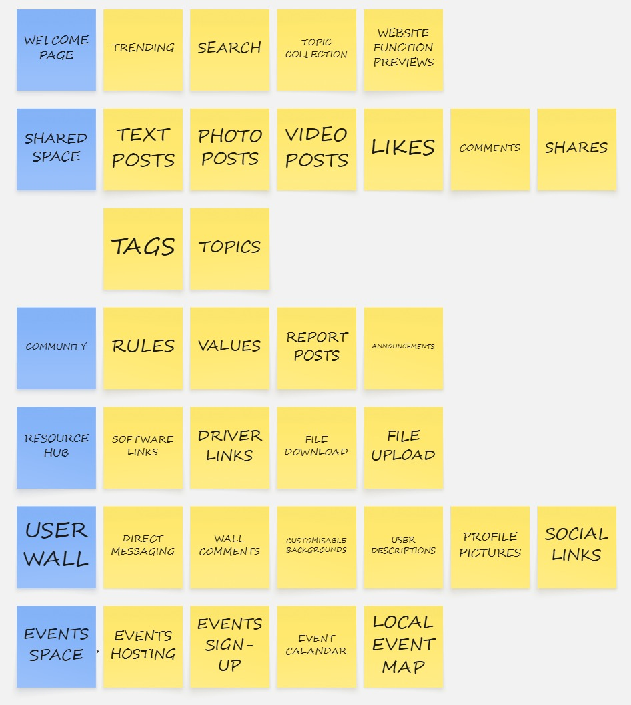

Website Site Map

The purpose of this exercise is to create a user-friendly navigation system structure. Each box contains a page with its components and features.
A central platform that connects tech enthusiasts or anyone interested in technology in a minimalistic and simple to use site to gather or share knowledge. This site will foster and support meaningful connections and interactions between users. As a hub it allows for community members, tech-users, exlorers and learners to convene in a shared inclusive platform allowing for each and every individual to connect, showcase their own unique identities and share their stories and experiences
The welcome page serves as the first point of contact for all visitors, offering an introduction to the community and setting the tone for the entire website. This directly supports the client’s goal of representing and celebrating the identity of the chosen community. By including meaningful imagery, community stories, and a concise explanation of the community’s mission or focus, the welcome page helps users feel connected and included from the outset.
"A trending page showcases the most active, discussed, or viewed content within the community. This feature fosters meaningful connections by highlighting what community members are currently engaging with, whether it’s a recent project, article, or event. It also supports ongoing interaction and relevance, aligning with the client’s aim of building vibrant, dynamic hubs of activity that reflect the evolving interests of the community."
-VISUAL IMPACT-
Trending posts will the first thing a user sees, making their visual presentation important. Having the treding posts the arranged and prominently displayed in the middle of the screen will create an immediate visual and emotional response
-ENGAGEMENT-
Trending posts will pique the user's curiosity, encouraging them to click and explore. This triggers a sense of anticipation and excitement.
-PERSONALIZATION-
The selection of trending posts can be based on popularity or relevance, creating a sense of value and catering to the user's potential interests. This leads to a feeling of being understood.
"Organising content into themed topic collections—such as AI, robotics, or coding—ensures that users can easily find information that is relevant to their interests. This directly addresses the client's need to provide clear, accessible information and resources. Topic collections also support inclusivity by catering to different levels of expertise and various sub-interests within the community, ensuring that no user is overlooked."
-PERSONALIZATION-
Subscribed topics create a sense of belonging and personalize the user experience. Users feel like they are part of a community with shared interests, which can lead to positive emotions.
-RELEVANCE-
Display of followed topics creates anticipation for new content related to those topics. This triggers a sense of excitement and relevance, making the user more likely to engage with the page.
-DISCOVERABILITY-
The grouping of followed topics helps users quickly scan and find what they are looking for. This contributes to a sense of ease and efficiency.
"The search function enhances accessibility by allowing users to locate specific content quickly and efficiently. This is especially important for users who rely on assistive technologies or have cognitive or time constraints. By supporting seamless interaction for all users, the search function upholds the client’s principles of ethical, inclusive, and accessible design."
-USE AND CONTROL-
A prominent and functional search bar provides a sense of control and empowerment. Users knows they can quickly find what they're looking for, reducing frustration and creating a feeling of efficiency.
-ANTICIPATION-
The act of typing and receiving search suggestions can be viscerally satisfying. The anticipation of finding the desired information is a positive emotional experience.
-ASETHETICS-
A sleek, minimalist search bar conveys a sense of modern design and efficiency.
A shared space page with features like text, video, and photo posts; likes, comments, and shares; and tags and topics fits well with the client’s goals. It builds on the mission of fostering connection, celebrating identity, and supporting engagement.
"This feature allows community members to share their stories, knowledge, and experiences in diverse formats. It supports the client’s mission of empowering communities to express their identities in authentic ways. By enabling multimedia content, the website becomes a vibrant, inclusive platform that reflects the richness and diversity of voices within the community."
-PERSONALIZATION-
Displaying the author's name and profile picture humanizes the content, creating a sense of connection and trust. This builds a positive emotional association with the website.
-READABILITY-
The choice of font(Instrument Serif), size(1.2rem), and overall typography directly impacts the ease and enjoyment of reading. Poor readability leads to frustration , while clear, well-formatted text creates a sense of comfort and ease.
-STRUCTURE-
Headings, bolding and colour guides the user's eye, making the content easier to scan and understand. This reduces cognitive load and creates a sense of control and efficiency.
-Interactivity-
Captions provide context and enhance the emotional impact of the image. A caption can trigger empathy, humor, or curiosity further engaging the user.
Interactivity makes the user feel more involved and in control. A hover zoom on images creates a sense of anticipation and encourages exploration.
"These interactive elements foster engagement and community connection. They encourage users to interact with each other’s content, offer support or feedback, and feel heard. This directly aligns with the goal of building meaningful connections and support within the community, creating a sense of belonging and dialogue."
-SOCIAL VALIDATION-
Seeing likes, shares, and comments indicates that others have found the content valuable or engaging. This creates a sense of social validation and encourages the user to participate.
-EMOTIONAL CONNECTION-
Comments create a sense of connection and belonging. Reading and responding to comments can trigger empathy, humor, and other positive emotions.
-INTERACTIVITY-
Likes having a filled color when click provide immediate feedback and make the platform feel responsive and engaging.
"Tags and topics help organise content in a way that’s user-friendly and accessible. They allow users to explore content by interest areas, improving discoverability. This supports the client's need for clarity, accessibility, and inclusiveness, helping both community members and the general public easily navigate and understand the contributions of the community."
-ORGANIZATION-
Organized topics help users quickly find content that interests them. This reduces cognitive load and creates a sense of efficiency and control.
-RELEVANCE-
Topics allow users to tailor their experience to their interests, creating a sense of >personalization and relevance. This makes the platform feel more valuable and engaging.
-RECOGNITION-
Allowing users to tag a post with terms like "helpful", "informative" makes topics easily recognizable and encourages
A community page that includes rules, values, announcements, and a way to report posts strongly supports the Connect Communities Initiative’s (CCI) commitment to ethical, inclusive, and supportive community spaces.
"Clearly stated community rules help set expectations for respectful behaviour, safety, and constructive participation. This promotes a healthy online environment where all users feel welcome, especially those from underrepresented or marginalised groups. Which supports the client need for ethical, inclusive, and culturally sensitive design principles."
-APPROACHABILITY-
Rules are presented in plain language and broken down into easily digestible sections. This influences how users feel about the community. Clear, concise, and friendly rules create a sense of welcome and safety. Rules are writen in a conversational tone and positive framing.
-VISUAL-
The visual design of the rules section influences its perceived importance and approachability. Rules are designed in a section with clear headings, bullet points, and visual cues making the rules easier to understand and less intimidating. Fonts are clear and consistent with ample white space, and a visually appealing layout. Rules are easily accessible as they are in a dedicated section.
"Articulating the community’s shared values (such as inclusion, innovation, respect, and collaboration) helps reinforce the identity and purpose of the platform. It gives users a sense of belonging and encourages alignment with the community's mission. This aligns with the client need of representing and celebrating the identity of the chosen community."
-AUTHENTICITY-
The values of the community shape its identity and create a sense of shared purpose. Values are clearly articulated and genuinely reflected in the community's behavior, users feel a sense of belonging and trust. If the values are vague or contradicted by community actions, users will experience confusion and distrust. Clearly defining the community's core values and using them to guide content moderation and community interactions. The values are prominently displayed and regularly reinforced through announcements and community events.
-CONNECTION-
Well-defined values can evoke positive emotions and create a strong sense of identity. This can lead to a feeling of
"A space for announcements keeps the community informed about important updates, upcoming events, and opportunities. This supports engagement and helps maintain an active, dynamic environment. This supports the client need of fostering meaningful connections and support within the community."
-TIMELINES-
Announcements that are relevant, timely, and well-presented create a sense of value and keep users informed. This fosters a feeling of being "in the know" and connected to the community. Irrelevant or outdated announcements can lead to frustration and disengagement. The date and time of each announcement are clearly stated and important announcements are prioritized and made easily visible.
-FORMATTING-
The visual design of announcements influences their perceived importance and readability. Announcements are designed with clear headings, bolding, and visual cues making it more likely to be noticed and read. A consistent format for all announcements is used in a dedicated feed for announcements.
"Providing a way to report inappropriate or harmful content is essential for maintaining safety and inclusivity. It empowers users to help moderate the space and reinforces a commitment to ethical design and digital wellbeing which aligns to the client need of ensuring ethical, inclusive, and culturally sensitive design principles are upheld."
-SECURITY-
A well-designed report post function provides users with a sense of safety and control. Knowing they can easily report inappropriate content fosters trust and encourages participation. The report button is made easily accessible and clearly labeled with a simple and intuitive reporting process. Offers clear feedback to users who submit reports.
-TRUST-
Transparency about how reports are handled builds trust and reinforces the community's commitment to safety. A lack of transparency can lead to suspicion and distrust. Information about the reporting process are provided as well. Update users who submit reports on status of their reports.
A resource hub featuring software and driver links, file downloads, and file uploads directly supports the Connect Communities Initiative’s (CCI) goal of providing clear, accessible information and resources while fostering meaningful support within tech and innovation communities.
"The resource hub is a practical tool that empowers community members—especially developers, makers, and learners—to access the essential tools they need for their work or learning. This directly aligns with the client’s aim to enhance visibility and influence by equipping users with the resources that support participation and contribution."
-TRUST-
Users need to trust that the software and drivers they download are safe and legitimate. The way these links are presented significantly influences this trust. Links will have descriptive and accurate labels. Other information included are:
> Version Information: Clearly displayed version numbers and release dates to instill confidence in the currency of the resources.
> Source Verification: Source of the software is included
> Visual Cues: Trust-building visual cues like verified badges or icons for verified downloads.
-EASE OF NAVIGATION-
Finding the right software or driver quickly reduces frustration and enhances the user experience. Therefore, links are organized by category, a robust search function that allows users to quickly find what they need and filters based on operating system, hardware type, or other relevant criteria is implemented.
-VISUAL-
The visual design influences the user's perception of the links. A clean, well-organized presentation is more appealing and trustworthy. A consistent format for all links, ample white space to prevent the page from feeling cluttered and headings, subheadings, and bolding to guide the user's eye will be implemented.
"File downloads, such as guides, templates, or open-source code, help share community-generated knowledge and reduce barriers to entry for newcomers. This reinforces inclusivity and knowledge-sharing, addressing the client’s commitment to accessible and culturally sensitive design principles."
-EASE OF USE-
A smooth and transparent download process creates a positive experience. This is implemented with the use of a prominent and easily identifiable download button. A progress bar or percentage to provide feedback during the download. And a clear confirmation message after the download is complete.
"Allowing file uploads enables members to contribute back—whether through tutorials, documentation, or project files—promoting collaboration and co-creation. This supports the client’s goal to foster meaningful connections and builds a sense of shared ownership and peer-to-peer support within the community."
-EASE OF USE-
An intuitive upload process reduces frustration and makes the user feel in control. Users are allowed to drag and drop files for easy uploading and a a progress bar or percentage during the upload will be displayed. Clear instructions on how to upload files are also included. Pop-up displayed after upload is completed.
-VISUAL-
The visual design of the upload area influences the user's perception of the functionality. A prominent and easily identifiable upload button is implemented.
A resource hub that includes profile photos, user descriptions, customisable backgrounds, social links, direct messaging, and wall comments adds a powerful social and personal dimension to the platform, directly supporting the Connect Communities Initiative’s (CCI) goal of fostering meaningful connections and community support.
"Allowing users to upload profile photos gives individuals a visual presence on the platform, helping to humanise online interactions and foster recognition among others. This aligns with CCI’s goal to celebrate unique identities and make community members more visible within a digital environment that values representation and belonging."
-CONNECTION-
Profile photos immediately humanize the experience and foster a sense of connection between users. Seeing a face creates an immediate sense of recognition and can trigger positive emotions. Clear guidelines on photo size, format, and content are provided. A cropping and editing tool to help users optimize their photos and a set of attractive default avatars for users who don't upload their own photos are provided.
-VISUAL-
A well-chosen profile photo can convey personality and create a positive first impression. Rounded corners for profile photos to create a softer, more approachable look and hover effects to make profile photos more engaging are implmented
"Providing space for user descriptions enables individuals to share personal stories, interests, or areas of expertise. This supports the client’s aim to offer clear, accessible information while allowing members to express themselves beyond just their contributions—helping to build understanding, respect, and collaboration within the community."
-SELF-EXPRESSION-
User descriptions allow users to express themselves and share their personality. This fosters a sense of identity and allows users to connect with others who share similar interests. Basic formatting options to enhance readability and users are allowed to control over who can see their descriptions.
-DISCOVERY-
User descriptions can help users find others with similar interests, leading to more meaningful connections. To do this, users are allowerd to tag their descriptions with keywords or hashtags. User descriptions are also searchable.
-VISUALS-
The way user descriptions are displayed influences their readability and appeal. A clear and easy-to-read font is used with ample white space to separate the description from other elements. Bolding or other visual cues to highlight key information are implemented.
"Customisable backgrounds enhance personalisation, giving users a sense of ownership over their space within the platform. This not only encourages engagement but also supports the client’s mission of empowering individuals through digital tools that reflect their voice and values."
-SELF-EXPRESSION-
Customizable backgrounds allow users to personalize their profile and express their individuality. This creates a sense of ownership and makes the user wall feel more like "their space". A library of pre-selected backgrounds is provided or additional backgrounds can be unlocked based on number of comments or posts. Users can also upload their own background banners.
Social links allow users to connect their profiles to external platforms or personal websites. This supports the client’s aim to enhance visibility and influence by helping users share their work and expand their networks beyond [SITENAME]."
-CONNECTIONS-
Social links allow users to connect with each other and share their other online profiles. This fosters a sense of community and allows users to expand their social network. The use recognizable icons for each social media platform. Users are able to control which social links are displayed.
-VISUAL-
The way social links are integrated into the profile influences their appeal. There is a consistent style for all social link icons. Social links are in a prominent and easily accessible location. There are hover effects to make social link icons more engaging.
"Direct messaging enables private, real-time communication between users, which fosters meaningful one-on-one connections and collaboration—key to the client’s goal of building supportive, interactive communities."
-CONNECTION-
Direct messaging allows users to communicate privately and build closer relationships. This fosters a sense of intimacy and connection. There is a simple and intuitive messaging interface with clear notifications for new messages. Additionally there is read receipts to provide feedback and improve communication.
-VISUAL-
The visual design of the messaging interface influences the user's experience. There is a clear and easy-to-follow conversation thread format with integrated profile photos into the messaging interface.
"Wall comments encourage open dialogue and community participation. They offer a casual, social layer that helps maintain a sense of community, even outside structured content areas. This promotes ongoing engagement and reinforces the client’s commitment to inclusive, ethical, and culturally sensitive interaction."
-ENGAGEMENT-
Wall comments allow users to interact with each other and create a sense of community. This fosters engagement and encourages users to return to the platform. There is a threaded comment system to make conversations easier to follow. Users can like and reply to encourage engagement.
-SAFETY-
Moderation tools help to create a safe and positive environment. There is a reporting button for users to report inappropriate content.
An events space that features event hosting, event sign-up, an event calendar, and a local event map directly addresses several core needs outlined by the Connect Communities Initiative (CCI), particularly around community engagement, visibility, and inclusivity.
"By enabling event hosting, the platform empowers community members and organisers to share opportunities—such as workshops, meetups, hackathons, or webinars—that reflect the interests and strengths of the community. This supports the client’s mission to celebrate community identity while giving members a stage to showcase their contributions and initiatives."
-CREATION-
Making it easy for users to create and manage events empowers them and reduces frustration. A sense of control is key. The website provides a streamlined, user-friendly interface for event creation. Users can easily input event details through a guided, step-by-step form that includes fields for title, description, date, time, location, and media uploads. A preview function allows users to review the full event listing before publishing. After an event is published, users can edit or update details using intuitive management tools available through their dashboard.
-VISUALS-
Attractive event listings are more likely to
-INTERACTION-
Facilitating interaction between hosts and attendees can foster a sense of community. Each event includes a dedicated comment section to facilitate discussions between hosts and attendees. Event hosts have profile pages that showcase their bio, past events, and optional social links, making it easier for attendees to connect with them and build trust.
"Event sign-up functionality ensures that participation is accessible and well-organised. It encourages involvement from both community members and the general public, directly fulfilling the client’s aim to foster meaningful connections and promote inclusive access to resources and opportunities."
-SIMPLIFIED-
A streamlined sign-up process reduces friction and encourages participation. The sign-up process has been optimized for ease of use. Users can register for events with a single click using existing accounts (e.g., Google or Facebook). Sign-up forms are intentionally minimal, collecting only the most essential information. Upon successful registration, users receive a clear confirmation message and, where applicable, follow-up reminders.
-ANTICIPATION-
Creating a sense of anticipation can encourage sign-ups. To generate interest and drive registrations, event pages feature countdown timers and real-time availability indicators showing how many spots remain. Event previews, such as teaser videos or images, are used to spark anticipation and excitement among prospective attendees.
-SOCIAL PROOF-
Seeing that others have signed up can encourage
"An event calendar provides a clear, centralised view of upcoming events, making it easy for users to stay informed and engaged. This aligns with the client's goal to provide clear, accessible information and supports a dynamic and active community presence."
-FLEXIBILITY-
A well-designed calendar makes it easy for users to find events that interest them. The event calendar offers multiple viewing modes, including monthly, weekly, and daily formats. Users can filter events by category, keyword, location, and date. Visual indicators such as color-coded tags and icons help distinguish between event types, improving usability.
-ENGAGEMENT-
A visually appealing calendar is more likely to capture the user's attention. The calendar interface is designed with a clean, minimal aesthetic. Event previews are shown on hover or click, providing key details without requiring navigation away from the calendar. Interactive elements add to a dynamic user experience without compromising clarity.
"A local event map allows users to discover nearby opportunities, which strengthens in-person connection and collaboration. This not only encourages broader social cohesion—one of CCI’s central missions—but also supports outreach beyond digital interaction, helping to integrate community members into the wider social fabric of their region."
-INTEGRATION-
A map makes it easy for users to discover events in their area. An interactive map, powered by Google Maps, allows users to explore events geographically. Users can pan, zoom, and click on map markers to view basic event information. Filtering options are available to narrow results by category, date, and location.
-VISUALISATION-
A visually appealing map provides context and makes it easier for users to understand the location of events.Map markers are visually distinct and categorized by event type. The integration of Google Street View allows users to preview event locations in more detail. The map also highlights nearby amenities such as public transport, parking, and food outlets for added convenience.
-PERSONALISATION-
Personalizing the map experience can enhance user engagement. The website recommends events based on the user's saved or current location. Users can bookmark or save events, which are then pinned on their personalized map view for quick reference and planning.